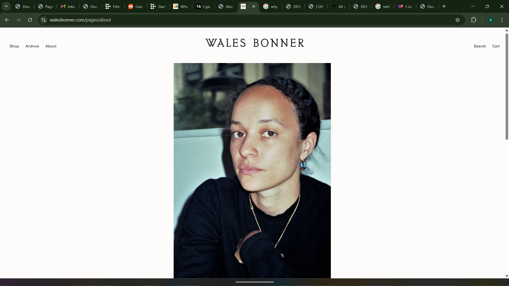
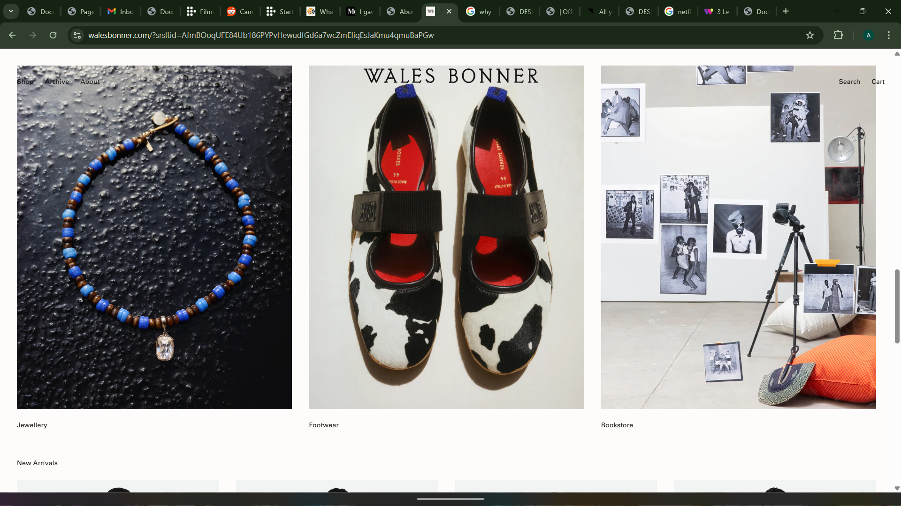
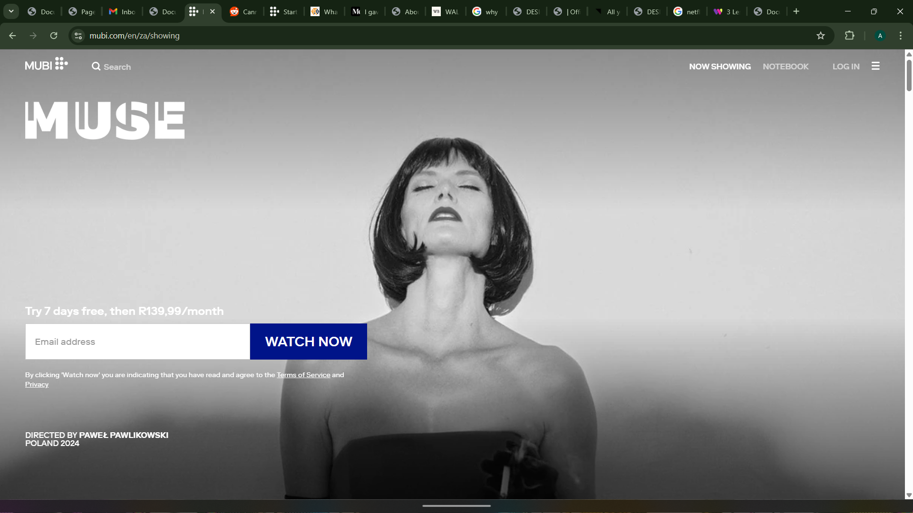
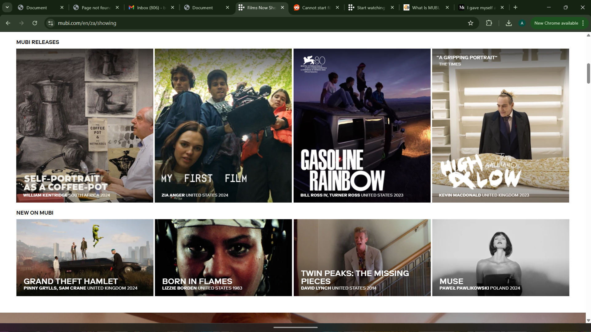

Websites
Websites that I find, innovative, expressive and well designed
Martine rose
Martine rose is a british menswear fashion brand out of london that focuses on creating a perflect blend of high fashion and streetwear. Martine is an artist who wears her Jamaican-british on her sleeves and emphasis self expression, not just for herself and brand but all who wear her clothes. She designs for all and shows that through the range in her pieces, the selection of her modals as well the subject of this discussion, her website.


What I like
-
Throughout my last two blogs, and my web design process. I speak on the idea of creating a world for users to visit, and using visuals and good spacing to allow for when users do open my website to experience they are launched straight into that world. This website is why I'm so stuck on that concept, the background visuals are not explained no giving small captions that description when or why they were taken or even put on the website in the first place. This creates a sense that this world existed before you came here and it will exist and change after. Matter of fact these images changed from the first time I checked this website for inspiration, and not in a way that they are randomized for every visit to the, more so in a sense that an event has happened for the organization of Martine rose, an event that called for the images to change. That sort of real world effect is what I hope to have for my website, letting users know that, my art, my brand will change weather you're watching or not. This theme is littered all throughout the site and its a characteristic I want to have in mine.
- It breaks the rules yet I am still drawn in: A disclaimer, I am a huge fan of Martine rose, her brand, its ethos and even the celebrities spotted in the clothing. I feel I identify with its ability to really craft an authentic identity in such a saturated market like fashion. And I feel like it gets this love from me because it breaks conventions of fashion constantly and I love how they brought that characteristic here on their website. For example sometimes their home bar will disappear as a result of it having the same colour of the visuals behind it, sometimes theres a bit of a visual inconsistency between the store portion of the site and the rest of the site. The store sections is in line with most fashion brands sites. For these rules to broken however, I feel like conventions of websites are challenged, for example how they approach the home bar, it still remains at the top but instead of having one colour in the spaces between options, they choose instead to leave the spaces between the options transparent. This decision, though not revolutionary, is huge in immersing viewers into their world, the site feels more fluid in the long run and the traversal easier.
What I don't like
This could all just be lazy web design and I just don't have the eyes or knowledge on the subject to tell. As said before a lot of this website does not follow rules of web design, fonts disappear into visuals, the homebar navigation tool is occasionally buggy and the spacing in the home page isn't balanced well. The site has its flaws that can sometimes get in the way of navigating it. This is an issue I hope to address in my site, a goal of mine is to achieve a distinct look and world to my site while the websites functionality and fluid lie at its foundation.
The IxD of the site
Talking on the IxD of the website, I just wanted to highlight some interface elements and details I really liked.
- The MARTIN ROSE: I really like that clicking on the name of the website takes you back to the homepage and when you hover over it it goes into a little box and uses normal capital letters.
- The archive and shop navigation tool: Throughout the website you are able to access any collection in rose's archive as well as any item in their shop. They do this by leaving the words archive and shop atop of any page within the sites invisible homebar. When a user hovers over each word a black rectangle appears covering anything thaat the site was showing in the space. Within the square pops up all relevant pieces necessary to the option you've decided to look at, so if you hovered over archive, collections will appear. This black square sort of functions as a navigation tool and I really like how slick yet bold it is, it carries characteristics that resonate well with the brand.
- The capitalizing of letters to let users know they're highlighting over something: I like the odd look of lowercase letters from start to finish. And I love how the website flips that to use capitalizing as a way to create visual literacy for users.
Grace Wales Bonner
Wales Bonner is a fashion designer dedicated to creating what she calls cultural luxury, a fusion of European heritage with an Afro Atlantic spirit.
 
What I like
- I love that the themes of her brand translate so well onto her page. Cultural luxury bleeds off this page so well, the use of vertical alignment, white spaces and balance all come together for an art gallery look. Using huge images of her pieces, Bonner allows for her works to provide the colour and pop of her site, this is a great decision and shines throughout the site.
- Once again I'm a huge fan of the lack of homebar on this,this is an experience first and a website second and that experience being of class and elegance. I love that her name much like the Martine Rose site serves as the home button. It's just such a classy website and I cant gush about it enough.
- The stripped back approach to the letters and overall design: In my Week 3 blog post I speak about the importance of a website creating space, in order for users to take in the experieacne the website is trying to offer them as well as the pieces and works on display specifically on a website that centers around someones work. Wales Bonner is a excellent display of how stripped back IxD can help carry and represent a brand identity and culture. Elegance is term I understand as stylish without trying and I feel that is presented in this site, through its lowercase lettering, Godfrey font and minimalistic approach to its interface elements. Bonner's site stands as a closer testament to a perfect balance between good web design and brand identity than even my favourite Martine rose.
What I don't like
The small fonts sometimes make it hard to find the sections you're looking for.
Mubi
Mubi is an online streaming service dedicated to showing a hand picked cinema that elevates the medium. It has a hand selected list of films, that range from avant garde to international cinema.
 
My thoughts on Mubi
I just wanted to switch mediums of discussion when it comes to the websites I enjoy from fashion to film. Mubi much like the Wales Bonner site takes a minimalistic approach to its design again focusing on creating space for the works on display to shine. What I love about Mubi specifically though is its dedication to cinema. When you pick what movie you want to watch, the site will display:
- Multiple credited reviews, such as the new yorker, on the film
- The films cast and production team
- Articles related to the film within the film scene
- Film industry awards the film as received along sides places the film is being shown